Todo o conhecimento no Deserto Negro. Serendiya
Outra parte do guia para todo o conhecimento no deserto preto, desta vez dedicado a todo o conhecimento da seção Serendiya. Neste artigo, que tentaram reduzir algum do peso e do número de imagens, a fim de reduzir o peso total do artigo. Embora seja uma opção experimental no futuro vou tentar otimizar a mesma forma que o resto do artigo.
Outros artigos da série:
A energia e conhecimento em Desert Preto (Guia de Introdução)
pessoas
- Moradores de Balenosa oriental
- moradores Serendii
- noivos urbanas
- Rangers marinas
- Moradores da Western Balenosa
- moradores Kalfeona
- moradores Keplana
- Moradores do sudoeste Kalfeona
- Moradores da mídia
- concessionários misteriosas
- nós de controle (do interior)
- nós de controle (North Ocean)
terreno

oceano

ecologia

Adventures
- Eastern Balenosa Jornal
Adventures in Velii
aventuras no antigo salão de
Aventura Elias Ilha
Adventures in Balenose I
- Jornal Serendii
Adventures in Serendii II
Adventures in Serendii III
Adventures in Serendii IV
Adventures in Serendii V
Adventures in Serendii I
- Jornal Kalfeona
aventuras no norte Kalfeona
Adventures in Keplan
Adventures no sudoeste Kalfeona
Adventures in Kalfeone I
Adventures in Kalfeone (coleta)
Kalfeon e Valquírias
Stories of Darkness
- da revista Meios Adventures na mídia I Adventure in the Media II Adventures na mídia III Acção na mídia IV Adventures na mídia V

ciência
- história I
- Histórico II
- Economia I
- política I
- cultura I
- teologia I
- Alchemy I
- I Clãs
- política II
- economia II
- cultura II
- cultura III
- teologia II
- Alchemy II
- mundo
Serendiya
North Serendii (2 poder)
| 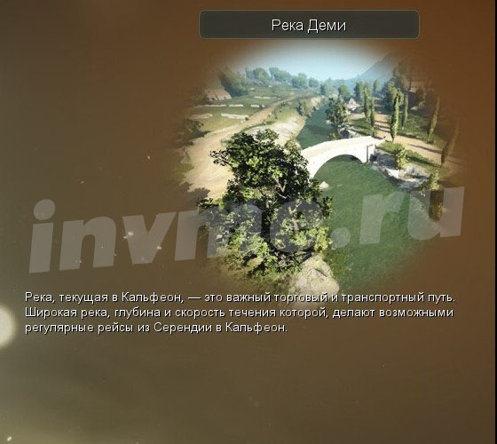 | Mais de 401 pontos de amizade e 8 Energia em Melissa , localizadas em Hidele, perto da entrada para a pousada sul. | 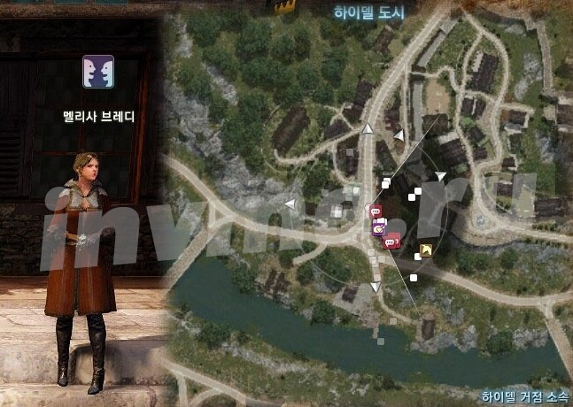 |
|  | Quinta com ovelhas, localizado nas montanhas ao noroeste de Hidelya, no norte da terra de demônios. | 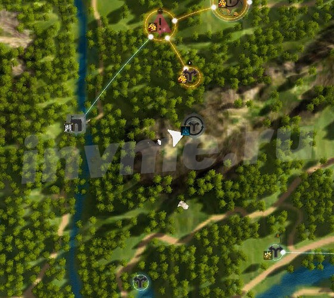 |
Ruínas Lincei fazenda | 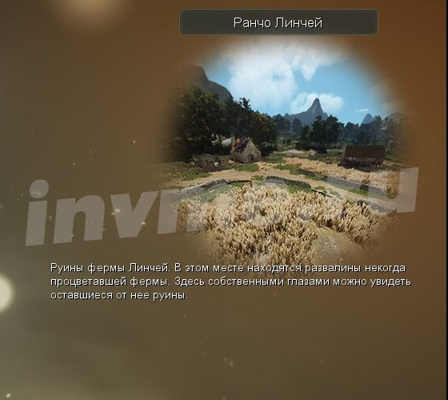 | a oeste da fazenda de Hidelya capturado por demônios. | 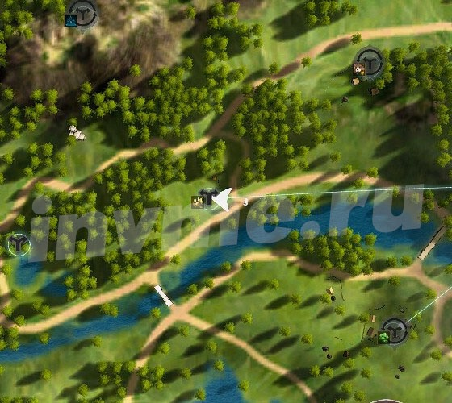 |
| 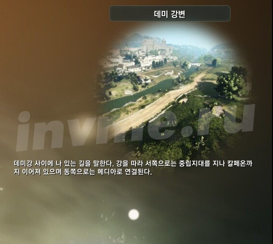 | Mais de 15 energia a partir de Luciano Pietro , um gigante no cais Hidelya. Segundo informações da Kulldach , ele pode aparecer somente após o recebimento do conhecimento restantes na coleção. Segundo informações da Gabreil , ele aparece apenas na personagem de nível 19+. | 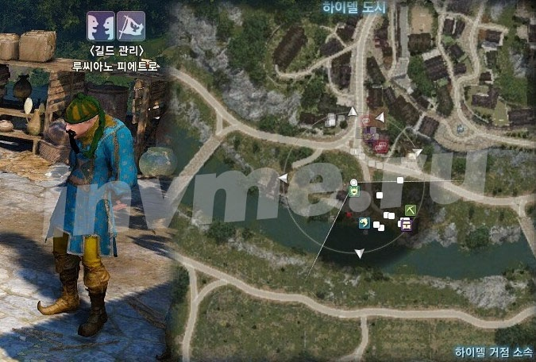 |
North Plain Serendii | 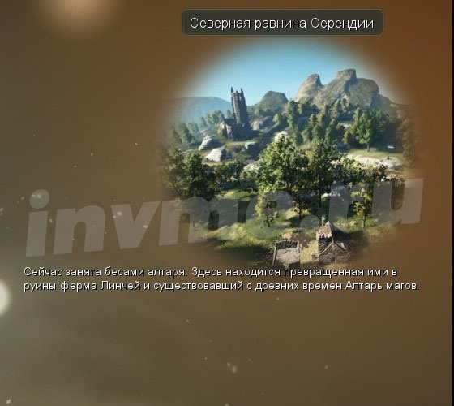 | demônios da Terra, localizada a oeste do Hidelya. Ou, para 501 pontos 8 de amizade e de energia a partir de Zara Lynch , localizada perto da estrada perto das ruínas da fazenda Lincei. |  |
Hidel Planalto Norte | 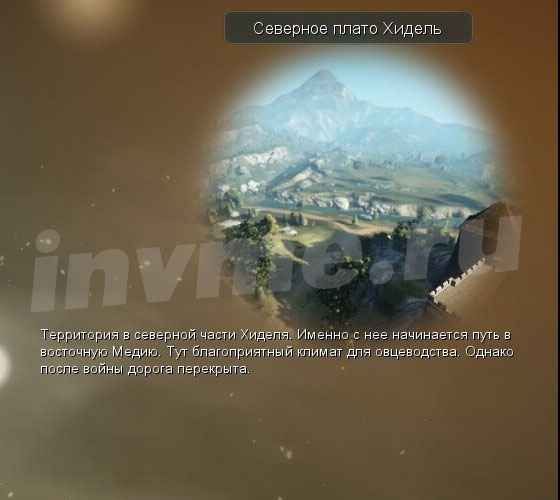 | No cruzamento norte de Hidelya em Berman para uma energia para a quest "Polar Hidel planalto." Quest oferece um guarda perto do Northern Inn Hidelya acima do solo com manequins. Rede aparece se você desligou o trabalho filtro "Investigação". Obrigado PoBelkin por essa observação. | 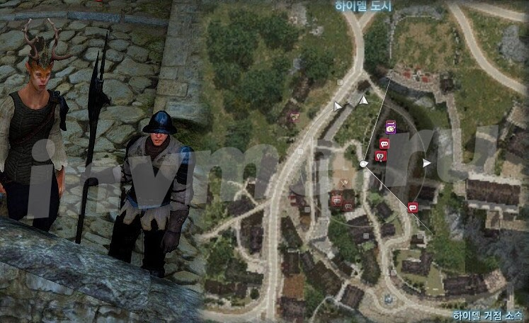 |
floresta Real | 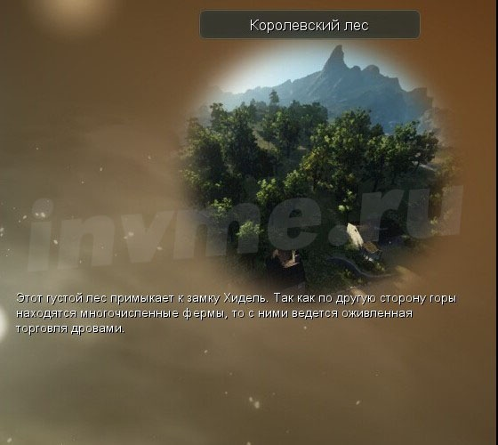 | Para 8 energia em Karest Fonti , no cruzamento norte de Hidelya. | |
| 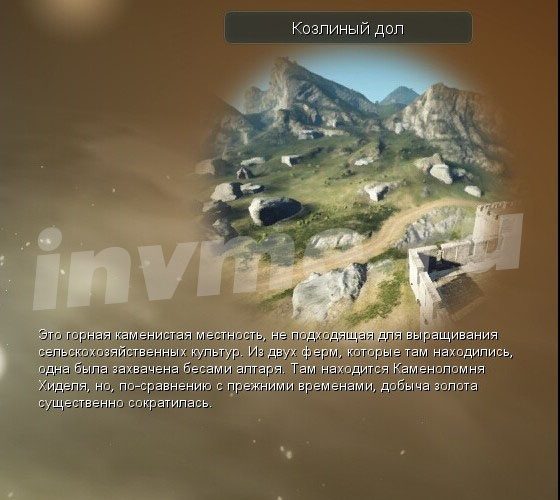 | Durante os primeiros 11 pontos de amizade e 5 energia na Amadeo Alejandro , situada na Quinta Alejandro, uma fazenda com abóboras, localizada a oeste do Hidelya. | |
| 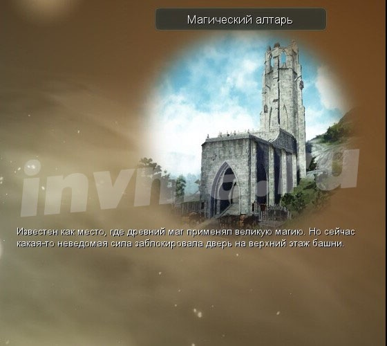 | Para 2 energia a partir de uma grande estátua do dragão no topo de uma grande torre em ruínas na parte norte da terra demônios, quando a quest "altar Tower" recebido da guarda em Hidele (mapa) para 17 nível. Prekvest tomadas a partir vayf Ston , na pedreira ao norte de Hidelya. Você também pode ser obtido realizando o mesmo trabalho por 15 energia a partir de Murano Lynch , localizado em uma fazenda de montanha ovelhas. Ou sem a busca de 501 pontos e 15 poder da amizade em Murano Lynch . | 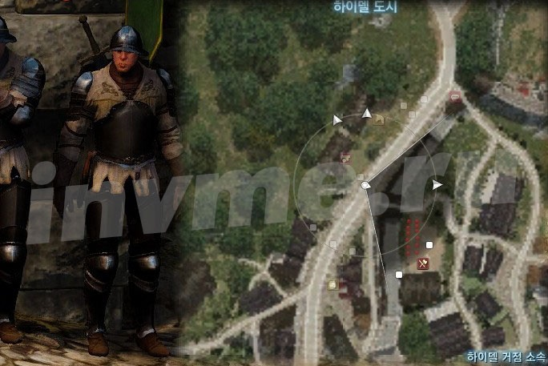 |
| 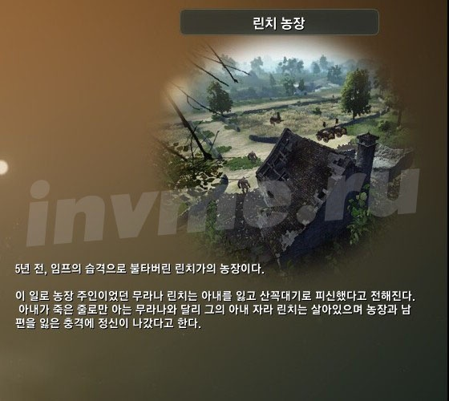 | Por 5 de potência em um pequeno tronco em uma casa em ruínas, localizada ao norte da Zara Lynch , localizada perto da estrada perto das ruínas da fazenda Lincei. | 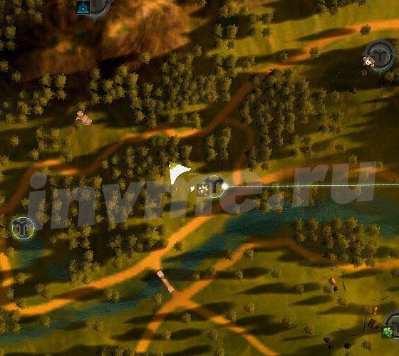 |
Farm Alejandro | 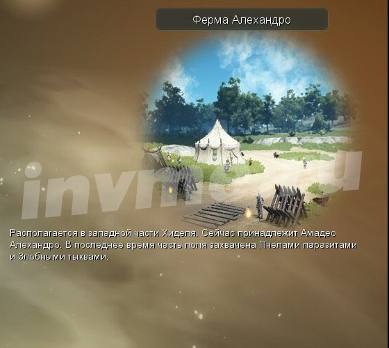 | Quinta com abóboras, localizada a oeste do Hidelya. | 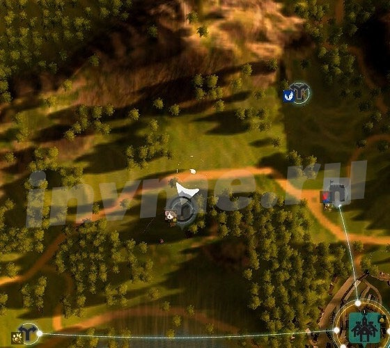 |
Hidel acampamento Watchdog | 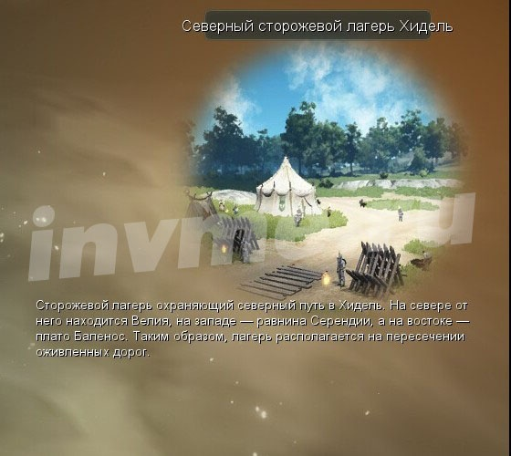 | norte cruzamento das Hidelya. | 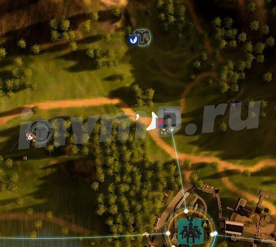 |
North Hidelya mina | 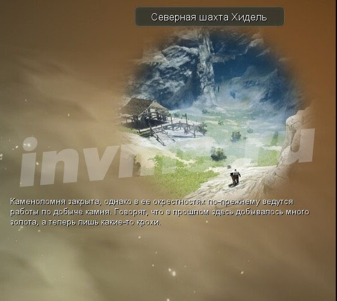 | Pedreira com um bando de demônios, localizado nas montanhas ao noroeste de Hidelya. Ou, para amizade 50 pontos e 5 de energia a partir de Dzhemkasa Vormsbeyna localizado no cruzamento norte de Hidelya. Ou ele é o mesmo para 10 energia. | 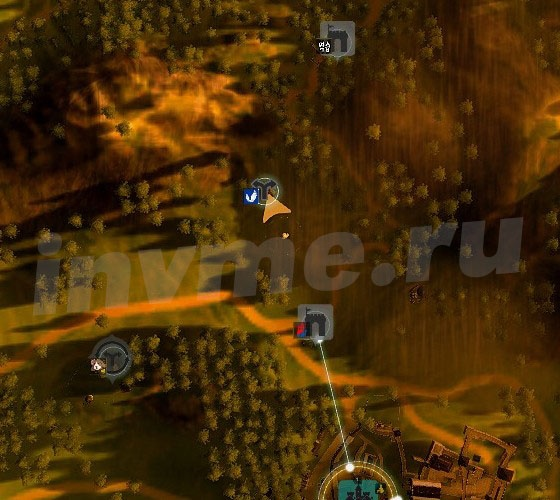 |
| 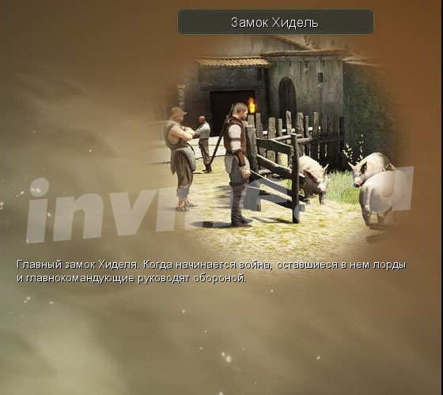 | Mais de 10 energia em Kruhorna Vormsbeyna , anão treinador Hidelya. Aparentemente, ele não aparecer imediatamente, mas após as missões em Glishi. | 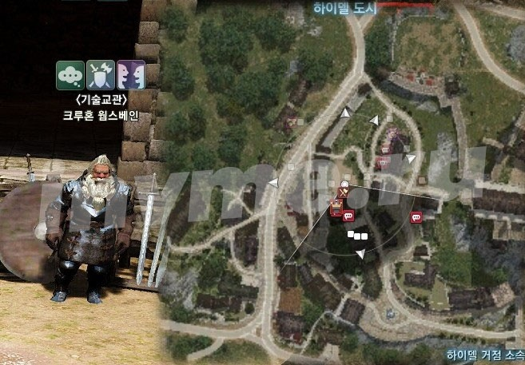 |
cidade Hidel | 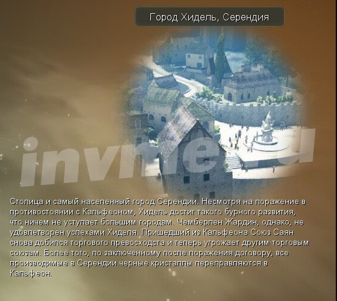 | Hidel, Serendii de capital | 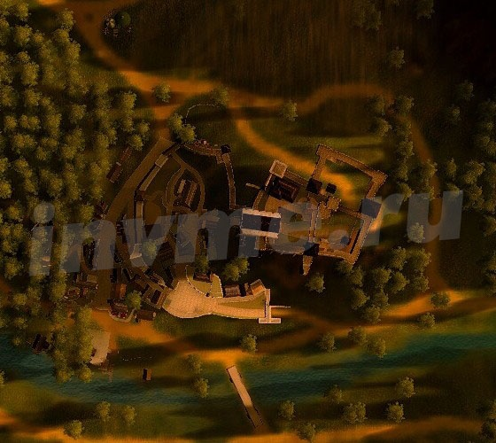 |
Pântanos Serendii (2 poder)
pântano do Norte | 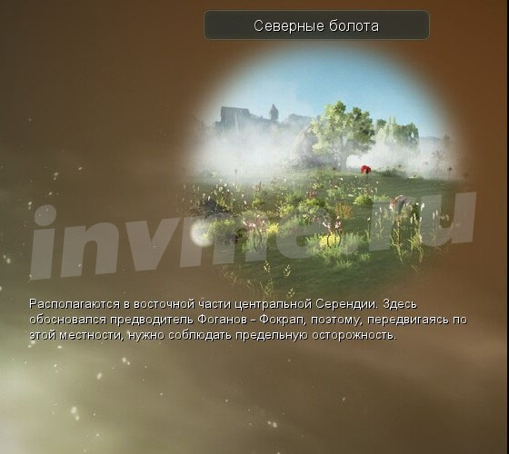 | Um pequeno pântano com flamingos, localizada ao sul de Hidelya, através do rio. Conhecimento é dado para a península na parte norte do pântano. Ou para 8 energia de Erwan Tito , chefe do East Gate posto. | 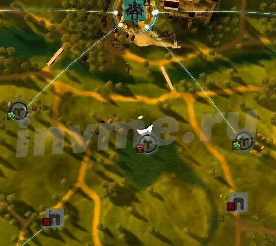 |
A detenção acampamento central | 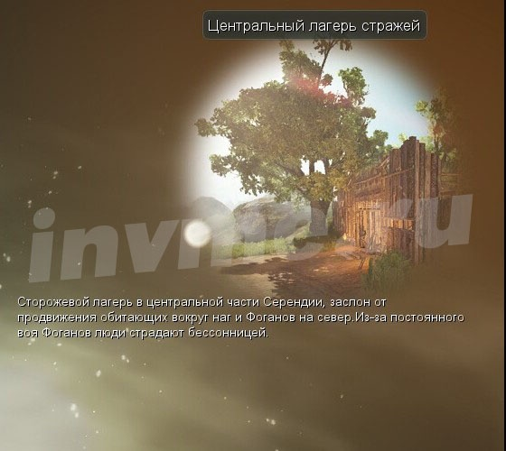 | O posto avançado na estrada para o sul-sudoeste de Hidelya. |  |
campo de detenção do Sul | 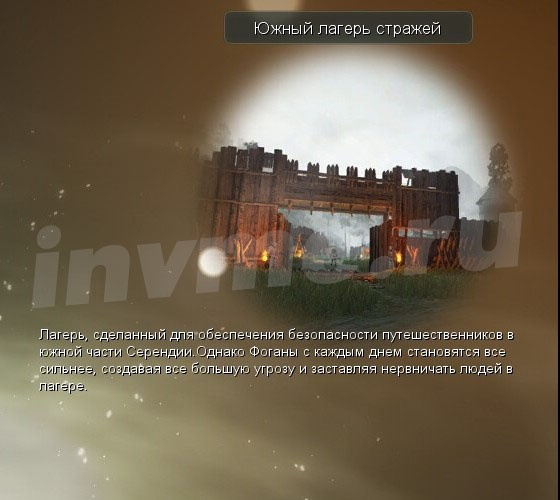 | Acampamento sul de Hidelya, no sul da localização, perto das montanhas e pântanos com foganami. Ou, para 201 pontos 8 amizade e energia ao Mestre Estável do mesmo campo. | |
| 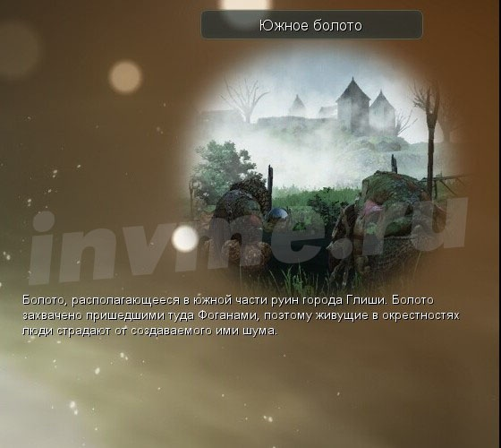 | Pântanos para o sul-leste de Hidelya, o conhecimento pode ser obtido na ponte sobre o pântano. Ou para 8 energia de medo . Ou para 51 pontos e 8 de energia amigável do campo de detenção Mestre Estável Sul. | 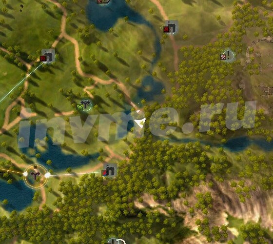 |
| 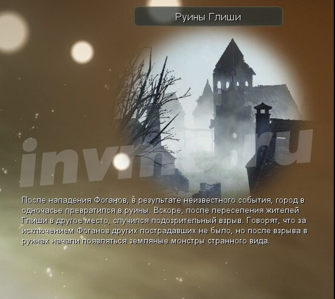 | As ruínas da cidade antiga Glishi. Ou para 8 de energia no Karoo . Ou ele está livre no diálogo. Ou ele é o mesmo para 10 energia. | 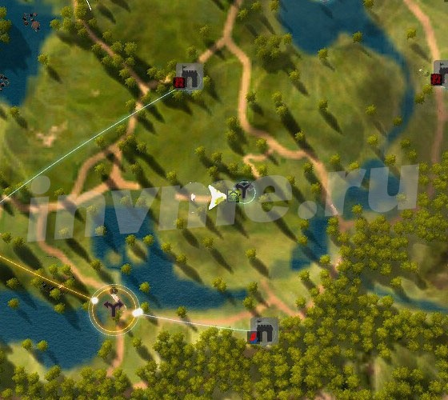 |
| 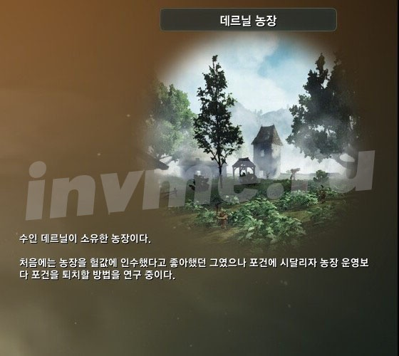 | Para 5 energia de Dernila , proprietário da fazenda ao sul-leste de Glishi. |  |
| 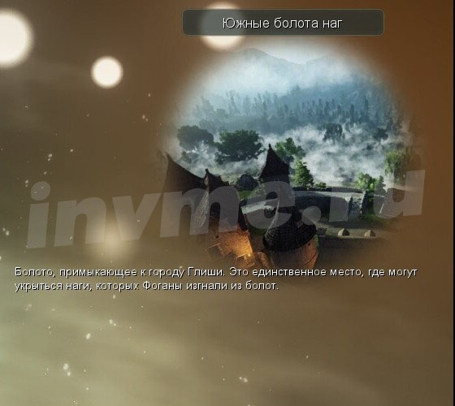 | Para 8 energia em Hannah , uma vendedora instrumentos Glishi. Disponível após missões em Glishi. De acordo com informações da Glassman , o conhecimento aparece depois de 200 amizade com Hannah. |  |
| 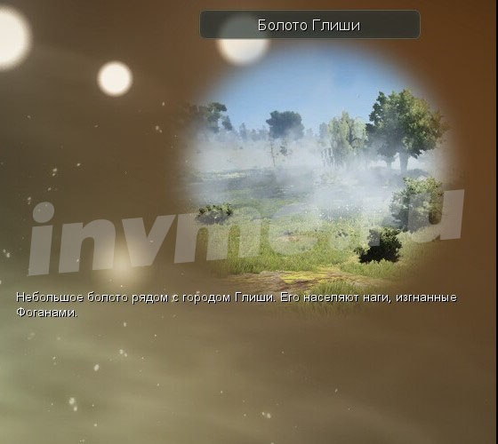 | Pântano oeste de Glishi, o conhecimento pode ser obtido em uma ilha no meio do pântano. | 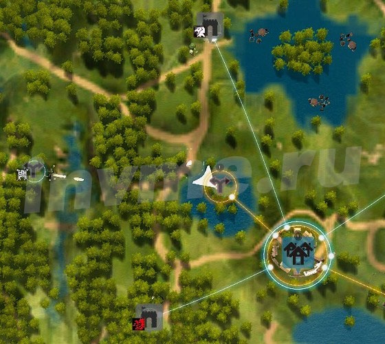 |
Northern Marsh foganov | 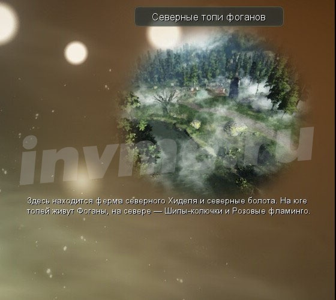 | Para 8 energia de Erwan Tito , chefe do East Gate posto. Segundo informações da SilverWolfen , aparece após a quest "flamingo Noble", que pode ser obtido a partir da guarda Kyle pé ao lado dele. | |
Southern Marsh foganov | 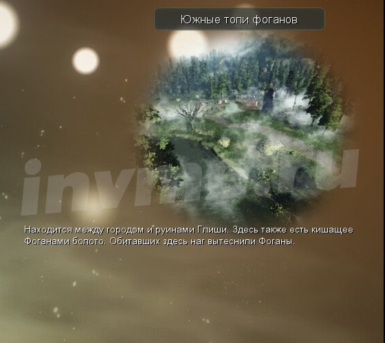 | Mais de 101 pontos de amizade e 8 de energia em Cheysara , treinador Glishi. | 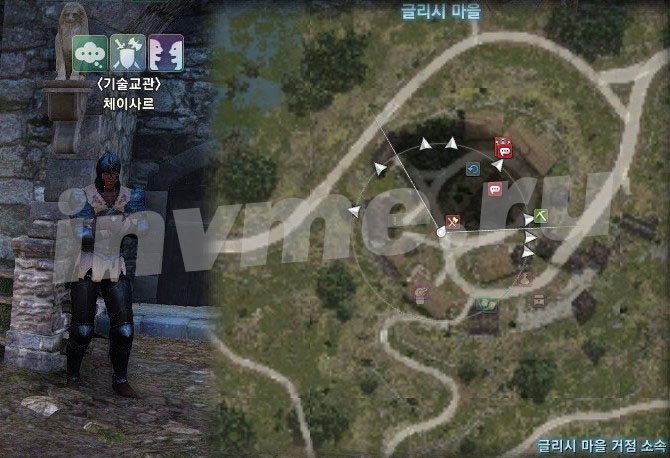 |
pântano do Norte nua | 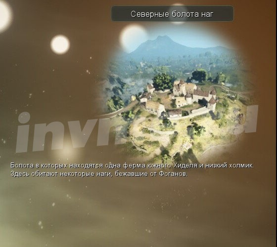 | Para 8 energia em Hannah , uma vendedora instrumentos Glishi. | 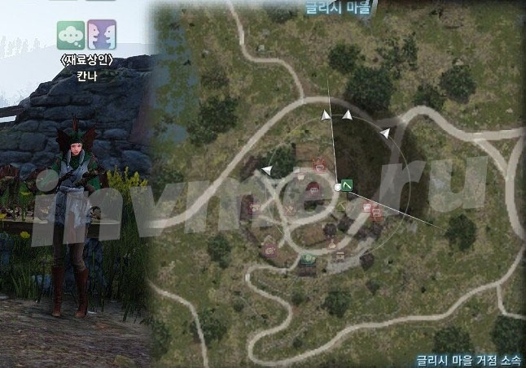 |
| 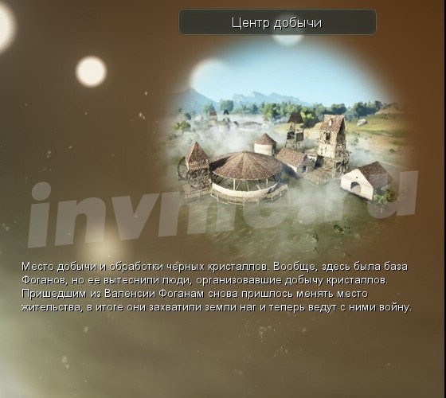 | Para 5 energia de Diranoa , um guarda em uma pequena casa no pântano norte de Glishi. | 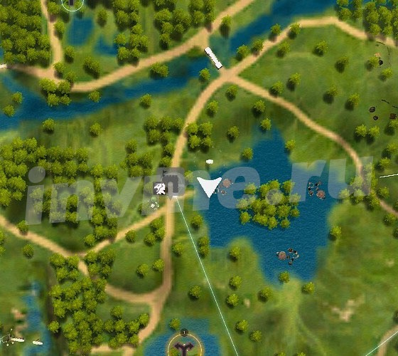 |
|  | Cidade entre os pântanos na parte sul-ocidental da Serendii. | 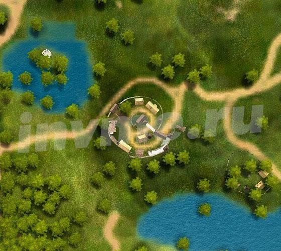 |
North-West Gate | 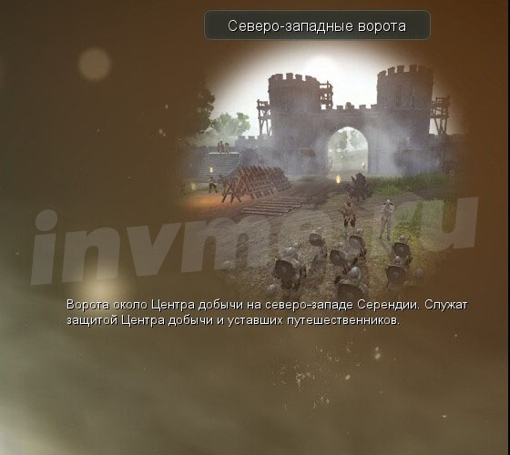 | Outpost noroeste de Glishi. Ou, para 351 pontos 8 amizade e energia em Publius . | 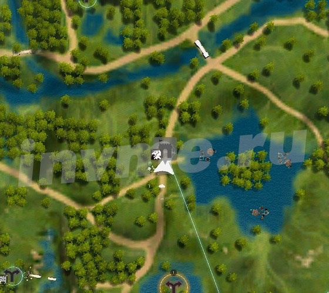 |
pântano Central nua | 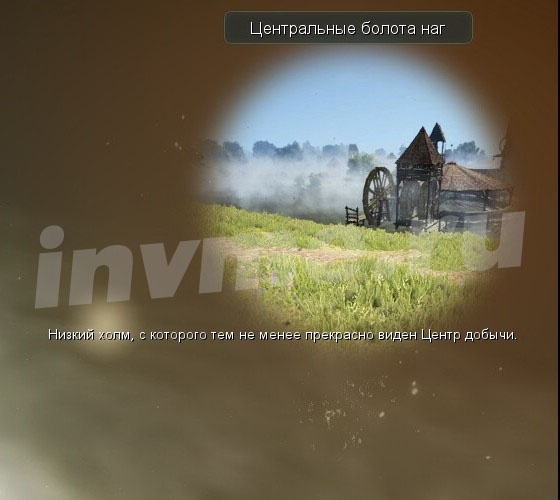 | Para 8 energia em Hannah , uma vendedora instrumentos Glishi. Aparentemente, só aparece após a realização de algumas tarefas na cidade. |  |
Plantation Moretti | 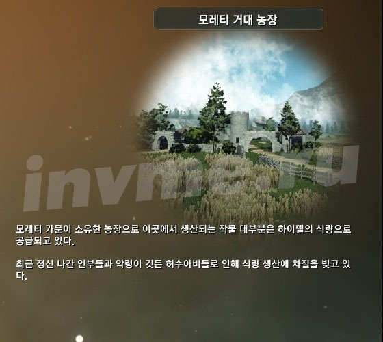 | espantalhos vivem fazenda, localizada ao sul-leste de Hidelya. Ou, para 101 pontos de amizade e 5 energia de Marcinho Moretti . | |
| Grande fazenda para a ponte sobre o rio ao sul-oeste de Hidelya. | ||
| Para 8 energia em Coco Elda , localizado em uma pequena fazenda sul de Hidelya. |
Southwest Serendii (3 energia)
| Mais de 201 pontos de amizade e de energia em 10 Romano Prospero , o chefe do posto avançado do portão Noroeste. |  | |
| A maioria torre em ruínas nas terras orc oeste de Glishi. Ou, para 501 pontos 8 de amizade e de energia na Publius , barracas de ranger no posto avançado do portão Noroeste. | ||
|  | Mais de 351 pontos de amizade e 8 energia de Oliviero , zelador barracas perto dos ladrões florestais. | |
| Den of Thieves Biraghi . Ladrões Fortaleza na parte noroeste da Serendii. |  | |
convento de sangue | fanáticos Mosteiro, localizada ao sul de Glishi. Ou 51 pontos e 8 de energia amigável de Carlo Derouz . Ou para 10 energia em Anarin . | ||
| Nas montanhas do sul Serendii, ao sul do campo de detenção do Sul. Ou para 5 energia de Anarin . |  | |
|  | Na floresta, os rebeldes Al Rundi, Sudeste do posto avançado East Gate. | |
O caminho para a toca Biraghi | A ponte sobre o rio entre Balenosom e Serendiey, localizado ao sul da Ocidental guardas do campo Balenosa. | ||
| O acampamento orc grande oeste de Glishi, na parte Serendii ocidental. | ||
| Zastava leste de Hidelya. | ||
|  | Para 8 energia em Kranti , localizado nas montanhas ao sul de Glishi, na parte ocidental do Sangue do mosteiro. Disponível imediatamente, mas, aparentemente, depois que as missões Sayzhekov. | |
lago monástica |  | Para 8 energia em Kranti , localizado nas montanhas ao sul de Glishi, na parte ocidental do Sangue do mosteiro. Segundo informações da joeBlade , o conhecimento está disponível com o nível de 25 caracteres. | |
gate Sudoeste |  | Zastava ao sul-oeste de Glishi. | |
| Arruinado forte com orcs, situada na parte ocidental Serendii, ao sul do rio. | ||
A trilha através do vale |  | Por 51 pontos e 10 poder da amizade de Xavier Vittel , posto portão sudoeste chefe. | |
| Mais de 151 pontos de amizade e 8 energia de Oliviero , zelador barracas perto dos ladrões florestais. | ||
| Mais de 101 pontos de amizade e 8 de energia em Maule , Shai Chief Southern campo de detenção. | ||
| Para 5 energia de Marcinho Moretti , a dona da fazenda dos espantalhos vivem no sudeste da Hidelya. Ou para 8 de energia em Lorain , Mestre estável no posto East Gate. |  | |
Sul Plain Serendii | Mais de 10 energia em Romano Prospero , o chefe do posto avançado do portão Noroeste. |  | |
|  | Zastava para o sul-leste de Hidelya perto do acampamento rebelde Al Rundi. Ou, para 101 pontos 8 de amizade e de energia em Lorain , mestre estável dos mesmos portões. | |
zona neutra do Sul | Na parte sul da terra orc, localizada no oeste Serendii. | ||
| | Mais de 10 energia a partir de Xavier Vittel , posto portão sudoeste chefe. Segundo informações da BruceONeel , para adquirir conhecimentos necessários para completar uma cadeia de busca que começa em Hakon trabalho "notificação Breharo". Depois de enviar, em vez de Kruhornu Vormsbeynu , Crucio Domongartu e Xavier Vittel . Última oferta-lhe uma cadeia de busca para sayzhekov "Inteligência fácil?", Depois que a cadeia você estará disponível conhecimento. Se não, eu recomendo a leitura para comentar sobre BruceONeel . |
|

{kind=link}
{kind=link}
{kind=link}
{kind=link}
{kind=link}
{kind=link}
{kind=link}
{kind=link}
{kind=link}
{kind=link}
{kind=link}
{kind=link}
{kind=link}
{kind=link}
{kind=link}
{kind=link}
{kind=link}
{kind=link}
{kind=link}
{kind=link}
{kind=link}
{kind=link}
{kind=link}
{kind=link}
{kind=link}
{kind=link}
{kind=link}
{kind=link}
{kind=link}
{kind=link}
{kind=link}
{kind=link}
{kind=link}
{kind=link}
{kind=link}
{kind=link}
{kind=link}
{kind=link}
{kind=link}
{kind=link}
{kind=link}
{kind=link}
{kind=link}
{kind=link}
{kind=link}
{kind=link}
{kind=link}
{kind=link}
{kind=link}
{kind=link}
{kind=link}
{kind=link}
{kind=link}
{kind=link}
{kind=link}
{kind=link}
{kind=link}
{kind=link}
{kind=link}
{kind=link}
{kind=link}
{kind=link}
{kind=link}
{kind=link}
{kind=link}
{kind=link}
{kind=link}
{kind=link}
{kind=link}
{kind=link}
{kind=link}
{kind=link}
{kind=link}
{kind=link}
{kind=link}
{kind=link}
{kind=link}
{kind=link}
{kind=link}
{kind=link}
{kind=link}
{kind=link}
{kind=link}
{kind=link}
{kind=link}
{kind=link}
{kind=link}
{kind=link}
{kind=link}
{kind=link}
{kind=link}
{kind=link}
{kind=link}
Como sempre vou ser muito grato por quaisquer correções, esclarecimentos adicionais e métodos de produção referidos no artigo conhecimento. Obrigado por sua atenção, todo um jogo agradável e uma grande quantidade de energia.
Talvez de tal modo que não há conhecimento deste no Erwan Tito? Pessoalmente, eu não tenho.
Sim, ele não aparecer imediatamente, ao que parece. Infelizmente eu não estou exatamente gravada depois de algumas missões. Tente fazer o trabalho no posto avançado. Não há forma mais busca noite lá, pois dá a joint venture, que também é útil.
Em sim geral, eu executei tudo o que era, e foi capaz de falar com ele.
Fui todos os quadrados e não há nada
Você deve completar a missão "flamingo Noble" Kyle, de pé um pouco para a direita de Tito
Obrigado pela informação. Adicionada ao texto principal.
Xavier requerente não dá conhecimento da zona neutra central. Todas as missões na Orc cumpridas, o Crucio como há missões. Pontos amizade 650+
O que poderia ser o problema?
UPD resolveu o problema de passar as missões, começando com "residentes Salvação" e ao longo da cadeia residentes Salvação
No "pântano Serendii" é a observação:
" Os pântanos centrais estava nu." Conhecimento se tornou disponível depois amizade com Hannah cerca de 200 (todas as suas missões aberto).
Para 8 energia em Kranti, localizado nas montanhas ao sul de Glishi, na parte ocidental do Sangue do mosteiro. Disponível imediatamente, mas, aparentemente, depois que as missões Sayzhekov. che por metro quadrado tem que percorrer para chegar Zanini
Não faço ideia. Toda vez que eu o levei para zakvestiv quase todo o local.
Obrigado, disse ele.
Campo - serendiya - serendii norte - Vale demi ( Luciano Pietro ), eu tenho que saber apenas quando enriquecido o resto deste grupo
Obrigado, disse ele.
Vale Demi menos lvl 19
Obrigado, adicionada ao texto principal.
Para obter o conhecimento da zona neutra central, você precisa tomar a busca de Hakon "Breharo Alerta", após o que a cadeia vai levar a Kruhornu mais tarde para Crucio, em seguida, para Xavier (quest em saydzhekov), então o orcs caçadores do corpo, em seguida, para Kruhornu, em seguida, para Oliviero (o noivo), e mais tarde para um oficial de pessoal. Então eu fui para obter o conhecimento da zona neutra central, é possível Oliviero e não precisa ir.
Eles também dizem que é necessário para executar uma cadeia de pelo Anarin, mas não posso confirmar isso.
Assunto para a pergunta sobre o conhecimento no forum GeymNet com a resposta da CMa
forum.gamenet.ru/showthread.php?t=59130
Muito obrigado pela informação. Adicionar à sua base de dados + um link para seu texto.
Busca para o conhecimento "Polar Plateau Hidel". O NPC Guardião não aparecer na busca principal ou Char, nem o segundo. Todos Hidel no conhecimento com NPCs e locais abertos anteriores. Quais são as limitações?
Parece haver, destruir-lo, possivelmente, ao nível de restrições, como sempre faço em 16+. Alternativamente, tente um par de missões na Hidele perto ou postos avançados de verificação Hidelya não está incluído se você filtrar empregos no lado direito da tela, e se agora a noite.
Para o conhecimento Monástica Lake exige nível 25+
Obrigado, disse ele.
Para conhecimento "Polar Plateau Hidel" deve ser incluído missões de investigação (ícone de roda). Primeiro conhecimento, o que é necessário, embora fosse 317 OR
Obrigado, disse ele.
Eu não posso obter o conhecimento:
Aldeia / Serendiya / Serendii Marsh / Farm turf
(Para 5 energia de Dernila, proprietário da fazenda ao sul-leste de Glishi.)
O Dernil não permitir isso. Talvez algo de errado?
Talvez o personagem de baixo nível, ou ainda precisa de algum prekvest em Glishi.
Obrigado caráter 20 recorreram. Retornou a base do 55º - ganhou conhecimento. Eu não sei por que a base não tivesse dado esse conhecimento.
De nada. Normalmente, um novo personagem pendurado em torno perto do nível da exploração de modo que no dia 25. Talvez você estava lá Mein pouco mais cedo, então foi para sayzhekov e "caiu" dela.